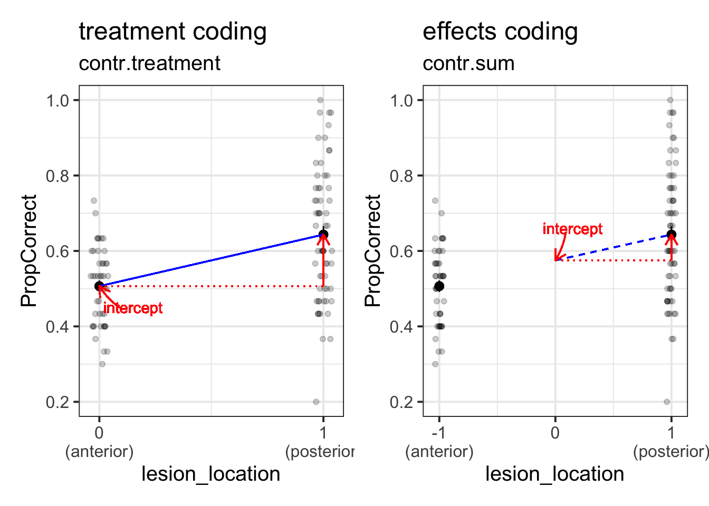

Exercises
lmer() >> glmer()
Remember how we simply used glm() and could specify the family = "binomial" in order to fit a logistic regression? Well it’s much the same thing for multi-level models!
- Gaussian model:
lmer(y ~ x1 + x2 + (1 | g), data = data)
- Binomial model:
glmer(y ~ x1 + x2 + (1 | g), data = data, family = binomial(link='logit'))
orglmer(y ~ x1 + x2 + (1 | g), data = data, family = "binomial")
orglmer(y ~ x1 + x2 + (1 | g), data = data, family = binomial)
For more on Binary vs Binomial, see this in depth section.
Novel Word Learning: Data Codebook
load(url("https://uoepsy.github.io/msmr/data/nwl.RData"))
In the nwl data set (accessed using the code above), participants with aphasia are separated into two groups based on the general location of their brain lesion: anterior vs. posterior. There is data on the numbers of correct and incorrect responses participants gave in each of a series of experimental blocks. There were 7 learning blocks, immediately followed by a test. Finally, participants also completed a follow-up test.
Data were also collect from healthy controls.
Figure 1 shows the differences between lesion location groups in the average proportion of correct responses at each point in time (i.e., each block, test, and follow-up)
| group |
Whether participant is a stroke patient (‘patient’) or a healthy control (‘control’) |
| lesion_location |
Location of brain lesion: anterior vs posterior |
| block |
Experimental block (1-9). Blocks 1-7 were learning blocks, immediately followed by a test in block 8. Block 9 was a follow-up test at a later point |
| PropCorrect |
Proportion of 30 responses in a given block that the participant got correct |
| NumCorrect |
Number of responses (out of 30) in a given block that the participant got correct |
| NumError |
Number of responses (out of 30) in a given block that the participant got incorrect |
| ID |
Participant Identifier |
| Phase |
Experimental phase, corresponding to experimental block(s): ‘Learning’, ‘Immediate’,‘Follow-up’ |
Question A1
Load the data. Take a look around. Any missing values? Can you think of why?
Solution
load(url("https://uoepsy.github.io/msmr/data/nwl.RData"))
summary(nwl)
## group lesion_location block PropCorrect NumCorrect
## control:126 anterior : 45 Min. :1 Min. :0.2000 Min. : 6.00
## patient:117 posterior: 63 1st Qu.:3 1st Qu.:0.5333 1st Qu.:16.00
## NA's :135 Median :5 Median :0.7000 Median :21.00
## Mean :5 Mean :0.6822 Mean :20.47
## 3rd Qu.:7 3rd Qu.:0.8333 3rd Qu.:25.00
## Max. :9 Max. :1.0000 Max. :30.00
##
## NumError ID Phase
## Min. : 0.000 control1 : 9 Length:243
## 1st Qu.: 5.000 control10: 9 Class :character
## Median : 9.000 control11: 9 Mode :character
## Mean : 9.535 control12: 9
## 3rd Qu.:14.000 control13: 9
## Max. :24.000 control14: 9
## (Other) :189
The only missing vales are in the lesion location, and it’s probably because the healthy controls don’t have any lesions. There may also be a few patients for which the lesion_location is missing, but this should be comparatively fewer values compared to controls.
The following command creates a two-way frequency table showing the number of controls or patients by lesion location, confirming that controls only have missing values (NAs) and only 9 patients have missing values:
table(nwl$group, nwl$lesion_location, useNA = "ifany")
##
## anterior posterior <NA>
## control 0 0 126
## patient 45 63 9
Question A2
Our broader research aim today is to compare the two lesion location groups (those with anterior vs. posterior lesions) with respect to their accuracy of responses over the course of the study.
- What is the outcome variable?
Hint: Think carefully: there might be several variables which either fully or partly express the information we are considering the “outcome” here.
Solution
The outcome here is (in words) the proportion of correct answers or, equivalently, the probability of answering correctly. A proportion/probability can only vary between 0 and 1 and, as such, we cannot use traditional linear regression or we could end up with predictions outside of the [0, 1] range.
As said, the outcome is the proportion of correct answers in each block. This makes it tempting to look at the variable called PropCorrect, but this is encoded as a proportion. We have learned to use logistic models, but these require either:
- a binary outcome variable, where the values are 0s or 1s
- a binomial outcome variable, where the values are aggregated counts of 1s and 0s
Binary data. In the case below you would use the specification correct ~ ...:
| participant |
question |
correct |
| 1 |
1 |
1 |
| 1 |
2 |
0 |
| 1 |
3 |
1 |
| ... |
... |
... |
Binomial data. You would use the specification cbind(num_successes, num_failures) which, in the case below, would be:
cbind(questions_correct, questions_incorrect) ~ ...
| participant |
questions_correct |
questions_incorrect |
| 1 |
2 |
1 |
| 2 |
1 |
2 |
| 3 |
3 |
0 |
| ... |
... |
... |
Question A3
Research Question 1:
Is the learning rate (training blocks) different between the two lesion location groups?
Hints:
Do we want cbind(num_successes, num_failures)?
Ensure you are running models on only the data we are actually interested in.
- Are the healthy controls included in the research question under investigation?
- Are the testing blocks included in the research question, or only the learning blocks?
We could use model comparison via likelihood ratio tests (using anova(model1, model2, model3, ...). For this question, we could compare:
- A model with just the change over the sequence of blocks
- A model with the change over the sequence of blocks and an overall difference between groups
- A model with groups differing with respect to their change over the sequence of blocks
What about the random effects part?
- What are our observations grouped by?
- What variables can vary within these groups?
- What do you want your model to allow to vary within these groups?
Suggested answers to the hints if you don’t know where to start
Do we want cbind(num_successes, num_failures)?
- Yes, we don’t a binary variable with correct/incorrect questions but the binomial variables NumCorrect and NumError representing, respectively, the aggregated count (out of 30) of correct and incorrect questions. As such, we will need the following:
cbind(NumCorrect, NumError)
Ensure you are running models on only the data we are actually interested in.
- The healthy controls are not included in the research question under investigation, so we will exclude them.
- We are only interested in the learning blocks, and we will exclude the testing blocks (block > 7)
- You might want to store this data in a separate object, but in the code for the solution we will just use
filter() inside the glmer().
A model with just the change over the sequence of blocks:
A model with the change over the sequence of blocks and an overall difference between groups:
- outcome ~ block + lesion_location
A model with groups differing with respect to their change *over the sequence of blocks:
- outcome ~ block * lesion_location
What are our observations grouped by?
- repeated measures by-participant. i.e., the
ID variable
What variables can vary within these groups?
Block and Phase. Be careful though - you can create the Phase variable out of the Block variable, so really this is just one piece of information, encoded differently in two variables.- The other variables (
lesion_location and group) do not vary for each ID. Lesions don’t suddenly change where they are located, nor do participants swap between being a patient vs a control (we don’t need the group variable anyway as we are excluding the controls).
What do you want your model to allow to vary within these groups?
- Do you think the change over the course of the blocks is the same for everybody? Or do you think it varies? Is this variation important to think about in terms of your research question?
Solution
m.base <- glmer(cbind(NumCorrect, NumError) ~ block + (block | ID),
data = filter(nwl, block < 8, !is.na(lesion_location)),
family=binomial)
m.loc0 <- glmer(cbind(NumCorrect, NumError) ~ block + lesion_location + (block | ID),
data=filter(nwl, block < 8, !is.na(lesion_location)),
family=binomial)
m.loc1 <- glmer(cbind(NumCorrect, NumError) ~ block * lesion_location + (block | ID),
data=filter(nwl, block < 8, !is.na(lesion_location)),
family=binomial)
#summary(m.loc1)
anova(m.base, m.loc0, m.loc1, test="Chisq")
## Data: filter(nwl, block < 8, !is.na(lesion_location))
## Models:
## m.base: cbind(NumCorrect, NumError) ~ block + (block | ID)
## m.loc0: cbind(NumCorrect, NumError) ~ block + lesion_location + (block | ID)
## m.loc1: cbind(NumCorrect, NumError) ~ block * lesion_location + (block | ID)
## npar AIC BIC logLik deviance Chisq Df Pr(>Chisq)
## m.base 5 454.12 466.27 -222.06 444.12
## m.loc0 6 454.66 469.25 -221.33 442.66 1.4572 1 0.2274
## m.loc1 7 454.47 471.48 -220.23 440.47 2.1974 1 0.1382
No significant difference in learning rate between groups (\(\chi^2(1)=2.2, p = 0.138\)).
Question A4
Research Question 2
In the testing phase, does performance on the immediate test differ between lesion location groups, and does the retention from immediate to follow-up test differ between the two lesion location groups?
Let’s try a different approach to this. Instead of fitting various models and comparing them via likelihood ratio tests, just fit the one model which could answer both parts of the question above.
Hints:
- This might required a bit more data-wrangling before hand. Think about the order of your factor levels (alphabetically speaking, “Follow-up” comes before “Immediate”)!
Solution
nwl_test <- filter(nwl, block > 7, !is.na(lesion_location)) %>%
mutate(
Phase = factor(Phase),
Phase = fct_relevel(Phase, "Immediate")
)
m.recall.loc <- glmer(cbind(NumCorrect, NumError) ~ Phase * lesion_location + (1 | ID),
nwl_test, family="binomial")
summary(m.recall.loc)
## Generalized linear mixed model fit by maximum likelihood (Laplace
## Approximation) [glmerMod]
## Family: binomial ( logit )
## Formula: cbind(NumCorrect, NumError) ~ Phase * lesion_location + (1 | ID)
## Data: nwl_test
##
## AIC BIC logLik deviance df.resid
## 139.3 145.2 -64.6 129.3 19
##
## Scaled residuals:
## Min 1Q Median 3Q Max
## -1.1556 -0.3352 0.0039 0.4963 1.3506
##
## Random effects:
## Groups Name Variance Std.Dev.
## ID (Intercept) 0.3626 0.6021
## Number of obs: 24, groups: ID, 12
##
## Fixed effects:
## Estimate Std. Error z value Pr(>|z|)
## (Intercept) -0.1124 0.3167 -0.355 0.7226
## PhaseFollow-up -0.0278 0.2357 -0.118 0.9061
## lesion_locationposterior 0.9672 0.4211 2.297 0.0216 *
## PhaseFollow-up:lesion_locationposterior -0.2035 0.3191 -0.638 0.5236
## ---
## Signif. codes: 0 '***' 0.001 '**' 0.01 '*' 0.05 '.' 0.1 ' ' 1
##
## Correlation of Fixed Effects:
## (Intr) PhsFl- lsn_lc
## PhaseFllw-p -0.372
## lsn_lctnpst -0.752 0.280
## PhsFllw-p:_ 0.275 -0.739 -0.385
Note 1:
In the above, we have made sure to select the patients by specifying !is.na(lesion_location), meaning that we want those rows where the lesion location is not missing. As a reminder ! is the negation function (not). As we saw in Question A1, this excludes the 126 healthy controls, as well as the 9 patients for which we have missing values (NAs).
Note 2:
We didn’t specify (Phase | ID) as the random effect because each participant only has 2 data points for Phase, and there is only one line that fits two data points. In other words, there is only one possible way to fit those two data points. As such, as each group of 2 points will have a perfect line fit, and the residuals \(\varepsilon_{ij}\) will all be 0. As a consequence of this, the residuals will have no variability as they are all 0, so \(\sigma_{\epsilon}\) is 0 which in turn leads to problem with estimating the model coefficients.
subset(nwl_test, ID == 'patient15')
## group lesion_location block PropCorrect NumCorrect NumError ID
## 1 patient anterior 8 0.5333333 16 14 patient15
## 13 patient anterior 9 0.5333333 16 14 patient15
## Phase
## 1 Immediate
## 13 Follow-up
If you try using (Phase | ID) as random effect, you will see the following message:
boundary (singular) fit: see help('isSingular')
Interpreting coefficients in logistic regression
Take some time to remind yourself from USMR of the interpretation of logistic regression coefficients.
The interpretation of the fixed effects of a logistic multilevel model is not very different.
We can obtain the fixed effects from our model by using:
fixef(model)summary(model)$coefficients
coef(summary(model))tidy(model) from the broom.mixed package
- (there are probably more ways, but I can’t think of them right now!)
It’s just that for multilevel models, we can model by-cluster random variation around these effects.
Question A5
- In
family = binomial(link='logit'). What function is used to relate the linear predictors in the model to the expected value of the response variable?
- How do we convert this into something more interpretable?
Solution
The link function is the logit, or log-odds (other link functions are available).
To convert log-odds to odds, we can use exp(), to get odds and odds ratios.
Question A6
Make sure you pay attention to trying to interpret each fixed effect from your models.
These can be difficult, especially when it’s logistic, and especially when there are interactions.
- What is the increase in the odds of answering correctly in the immediate test for someone with a posterior legion compared to someone with an anterior legion?
Solution
(Intercept) ==> Anterior lesion group performance in immediate test. This is the log-odds of them answering correctly in the immediate test.PhaseFollow-up ==> Change in performance (for the anterior lesion group) from immediate to follow-up test.lesion_locationposterior ==> Posterior lesion group performance in immediate test relative to anterior lesion group performance in immediate testPhaseFollow-up:lesion_locationposterior ==> Change in performance from immediate to follow-up test, posterior lesion group relative to anterior lesion group
## lesion_locationposterior
## 2.630634
Those with posterior lesions have 2.63 times the odds of answering correctly in the immediate test compared to someone with an anterior lesion.
OPTIONAL: A7
Recreate the visualisation in Figure 2.
Solution
ggplot(filter(nwl, !is.na(lesion_location)), aes(block, PropCorrect,
color=lesion_location,
shape=lesion_location)) +
#geom_line(aes(group=ID),alpha=.2) +
stat_summary(fun.data=mean_se, geom="pointrange") +
stat_summary(data=filter(nwl, !is.na(lesion_location), block <= 7),
fun=mean, geom="line") +
geom_hline(yintercept=0.5, linetype="dashed") +
geom_vline(xintercept=c(7.5, 8.5), linetype="dashed") +
scale_x_continuous(breaks=1:9,
labels=c(1:7, "Test", "Follow-Up")) +
theme_bw(base_size=10) +
labs(x="Block", y="Proportion Correct",
shape="Lesion\nLocation", color="Lesion\nLocation")

Coding Schemes for Categorical Predictors
Remember that categorical predictors get inputted into our model as a series of variables which are 0s and 1s? Previously the variable in our model for lesion location was actually being coded with 0 representing one level, and 1 representing the other. This is known as “treatment coding”.
There are lots of other ways we might encode our categorical predictors. One common approach is to use “effects coding”. In the case where we have a binary predictor, this makes zero the mid-point between the two - i.e., the overall mean (this is a bit like mean-centering a continuous predictor).
If we recall that the intercept is “when all predictors are zero”, and that when we have an interaction Y~A+B+A*B in our model, the individual coefficients for A and B are estimated “when the other variable is zero”, then we can start to understand how these different ways of encoding our categorical predictors can change what we are getting out of our model. (Note, they don’t actually change anything about the model fit, but they change what information we are estimating from the model).

If you want to understand this a little more, take a look at this in depth section.
Question A8
This code is that we used to answer question A4 above, only we have edited it to change lesion location to be fitted with “effects coding”.
nwl_test <- filter(nwl, block > 7, !is.na(lesion_location)) %>%
mutate(
Phase = factor(Phase),
Phase = fct_relevel(Phase, "Immediate")
)
m.recall.loc.effcoding <-
glmer(cbind(NumCorrect, NumError) ~ Phase * lesion_location + (1 | ID),
contrasts = list(lesion_location = "contr.sum"),
data = nwl_test, family="binomial")
The interpretation of this is going to get pretty tricky - we have a logistic regression, and we have different coding scheme for our categorical predictor, and we have an interaction.. 🤯
Can you work out the interpretation of the fixed effects estimates?
Solution
(Intercept) ==> Overall performance in immediate test. This is the overall log-odds of answering correctly in the immediate test.PhaseFollow-up ==> Average change in performance from immediate to follow-up test.lesion_location1 ==> Anterior lesion group performance in immediate test relative to overall average performance in immediate testPhaseFollow-up:lesion_location1 ==> Change in performance from immediate to follow-up test, anterior lesion group relative to overall average
???
How do we know that lesion_location1 is the anterior and not the posterior lesion group?
We need to check the what the contrasts look like:
contrasts(nwl_test$lesion_location) <- "contr.sum"
contrasts(nwl_test$lesion_location)
## [,1]
## anterior 1
## posterior -1
Because there are only two levels to this variable, the estimate will simply flip sign (positive/negative) depending on which way the contrast is leveled.
Optional: I liked my coefficients being named properly
colnames(contrasts(nwl_test$lesion_location)) <- "PeppaPig"
contrasts(nwl_test$lesion_location)
## PeppaPig
## anterior 1
## posterior -1
modeltest <-
glmer(cbind(NumCorrect, NumError) ~ Phase * lesion_location + (1 | ID),
nwl_test, family="binomial")
summary(modeltest)$coefficients
## Estimate Std. Error z value
## (Intercept) 0.3711859 0.2105010 1.7633455
## PhaseFollow-up -0.1295472 0.1595315 -0.8120479
## lesion_locationPeppaPig -0.4836152 0.2105572 -2.2968351
## PhaseFollow-up:lesion_locationPeppaPig 0.1017455 0.1595298 0.6377840
## Pr(>|z|)
## (Intercept) 0.07784223
## PhaseFollow-up 0.41676413
## lesion_locationPeppaPig 0.02162818
## PhaseFollow-up:lesion_locationPeppaPig 0.52361429
Hang on.. p-values are back?!
We noted at the end of last week that we don’t have p-values for lmer(), but you might notice that we do now have them when we’ve fitted a model with glmer()?
The reason is partly just one of convention. There is a standard practice for determining the statistical significance of parameters in the generalised linear model, relying on asymptotic Wald tests which evaluate differences in log-likelihood.
Reading: Inference in MLM
In USMR, we fitted various simple linear models using lm(), and we could get out either a table of coefficients (for example, Table 1) or a table of the reduction in sums of squared residuals (for example, Table 2). In both of these cases we had a nice set of p-values for us to look at (in R, we often find the p-values in the column named something like Pr(>F)).
A quick reminder: a p-value is the probability of observing results as or more extreme than the obtained ones, if the data were really generated by the hypothesised model or process).
Table 1: t-tests for slope coefficients for predictors in a linear model
Term | Estimate | Std. Error | t value | Pr(>|t|) |
|---|
(Intercept) | 5.37 | 4.32 | 1.24 | .224 |
outdoor_time | 0.59 | 0.17 | 3.51 | .001 |
social_int | 1.80 | 0.27 | 6.70 | < .001 |
Table 2: F-tests for predictors in a linear model
Term | df | Sum Sq | Mean Sq | F value | Pr(>F) |
|---|
outdoor_time | 1 | 1,427.94 | 1,427.94 | 37.77 | < .001 |
social_int | 1 | 1,697.82 | 1,697.82 | 44.91 | < .001 |
Residuals | 29 | 1,096.24 | 37.80 |
|
|
We could get p-values for these models because we know what the distribution of test statistics of interest (e.g. \(F\)-statistics and \(t\)-statistics), will look like if the null hypothesis were true (i.e., we can describe what they look like in terms of \(F\) and \(t\) distributions with specific degrees of freedom (look back to the USMR materials for a formula).
Unfortunately, the same is not true of multilevel models. For the multilevel model, we can think of it as having residuals at multiple levels: we have the random variation of clusters around the fixed effects, and then random variation of observations around the cluster-level effects (more on this in Week 4).
In the rare occasion that you have a perfectly balanced experimental design, then ratios of sums of squares for multi-level models follow an \(F\)-distribution, in which we know the numerator and denominator degrees of freedom (this means we can work out the degrees of freedom for the \(t\)-test of our fixed effect parameters). Unfortunately, in the real world where things are not often perfectly balanced, determining the denominator degrees of freedom becomes unclear.
Last week, we mentioned a couple of approaches that we might take for drawing inferences, finding ways to compute p-values or confidence intervals. We’re going to now extend this to include a few more, and discuss the strengths and limitations of the different approaches.
For these examples…
For the following examples, we’re going to return to our dataset of various toys, and we are going to be concerned with whether practice (the hrs_week variable) is associated with changes in reading ages (R_AGE variable).
To accommodate for the clustered nature of the data, we are going to fit a model with both intercepts and slopes varying by toy-type.
toys_read <- read_csv("https://uoepsy.github.io/data/toyexample.csv")
full_model <- lmer(R_AGE ~ hrs_week + (1 + hrs_week | toy_type), data = toys_read)
summary(full_model)
## Linear mixed model fit by REML ['lmerMod']
## Formula: R_AGE ~ hrs_week + (1 + hrs_week | toy_type)
## Data: toys_read
##
## REML criterion at convergence: 637.8
##
## Scaled residuals:
## Min 1Q Median 3Q Max
## -2.51393 -0.58005 -0.00348 0.64053 2.38403
##
## Random effects:
## Groups Name Variance Std.Dev. Corr
## toy_type (Intercept) 2.0349 1.4265
## hrs_week 0.7834 0.8851 0.63
## Residual 4.3702 2.0905
## Number of obs: 132, groups: toy_type, 20
##
## Fixed effects:
## Estimate Std. Error t value
## (Intercept) 1.7559 0.9610 1.827
## hrs_week 1.1435 0.2957 3.867
##
## Correlation of Fixed Effects:
## (Intr)
## hrs_week -0.547
Use a normal approximation (not advisable)
Remember that the \(t\) distribution starts to look more and more like the \(z\) (“normal”) distribution when degrees of freedom increase? We could just assume we have infinite degrees of freedom in our test statistics, and pretend that the \(t\)-values we get are actually \(z\)-values. This is “anti-conservative” in as much as it is not a very cautious approach, and we are likely to have a higher false positive rate (e.g. more chance of saying “there is an effect!” when there actually isn’t.)
coefs <- as.data.frame(summary(full_model)$coefficients)
coefs$p.z <- 2 * (1 - pnorm(abs(coefs[,3])))
coefs
## Estimate Std. Error t value p.z
## (Intercept) 1.755943 0.9610348 1.827138 0.0676790647
## hrs_week 1.143508 0.2956875 3.867286 0.0001100533
Satterthwaite df approximation
There have been a couple of methods proposed to estimate the degrees of freedom in order to provide a better approximation to the null distribution of our tests. The way the Satterthwaite method has been implemented in R will just add a column for p-values to your summary(model) output).
Load the lmerTest package, refit the model, and voila!
library(lmerTest)
full_model <- lmer(R_AGE ~ hrs_week + (1 + hrs_week | toy_type), data = toys_read)
summary(full_model)$coefficients
## Estimate Std. Error df t value Pr(>|t|)
## (Intercept) 1.755943 0.9610348 16.19251 1.827138 0.086168780
## hrs_week 1.143508 0.2956875 17.51503 3.867286 0.001178702
Reporting
To account for the extra uncertainty brought by the inclusion of random effects in the model, the degrees of freedom in the coefficients tests have been corrected via Satterthwaite’s method.
…
…
Weekly hours of reading practice was associated with increased reading age (\(\beta = 1.14,\ SE = 0.30,\ t(17.52^*) = 3.87,\ p = .001\)).
Note: if you have the lmerTest package loaded, then all the models you fit with lmer() will show p-values! If you want to stop this, then you will have to detach/unload the package, and refit the model.
detach("package:lmerTest", unload=TRUE)
Kenward Rogers df approximations
The Kenward-Rogers approach is slightly more conservative than the Satterthwaite method, and has been implemented for model comparison between a full model and a restricted model (a model without the parameter of interest), using the KR adjustment for the denominator degrees of freedom in the \(F\)-test.
For this, models must be fitted with REML, not ML. The function KRmodcomp() will take care of this and re-fit them for you.
library(pbkrtest)
restricted_model <- lmer(R_AGE ~ 1 + (1 + hrs_week | toy_type), data = toys_read)
full_model <- lmer(R_AGE ~ hrs_week + (1 + hrs_week | toy_type), data = toys_read)
KRmodcomp(full_model, restricted_model)
## large : R_AGE ~ hrs_week + (1 + hrs_week | toy_type)
## small : R_AGE ~ 1 + (1 + hrs_week | toy_type)
## stat ndf ddf F.scaling p.value
## Ftest 14.637 1.000 17.738 1 0.001266 **
## ---
## Signif. codes: 0 '***' 0.001 '**' 0.01 '*' 0.05 '.' 0.1 ' ' 1
Reporting
To account for the extra uncertainty brought by the inclusion of random effects in the model, the denominator degrees of freedom in have been corrected via Kenward-Rogers’ method.
…
…
Inclusion of weekly hours of reading practice as a predictor was associated with an improvement in model fit (\(F(1,17.74^*) = 14.64,\ p = .001\)).
Likelihood Ratio Test (LRT)
Conduct a model comparison between your model and a restricted model (a model without the parameter of interest), evaluating the change in log-likelihood.
Likelihood
“likelihood” is a function that associates to a parameter the probability (or probability density) of observing the given sample data.
The intuition behind likelihood:
- I toss a coin 10 time and observed 8 Heads.
- We can think of a ‘model’ of the process that governs the coin’s behaviour in terms of just one number: a parameter that indicates the probability of the coin landing on heads.
I have two models:
- Model 1: The coin will land on heads 20% of the time. \(P(Heads)=0.2\)
- Model 2: The coin will land on heads 70% of the time. \(P(Heads)=0.7\)
- Given the data I observe (see 1, above), we can (hopefully) intuit that Model 2 is more likely than Model 1.
For a (slightly) more detailed explanation, see here.
This method assumes that the ratio of two likelihoods will (as sample size increases) become closer to being \(\chi^2\) distributed, and so may be unreliable for small samples.
Models must be fitted with ML, not REML. The function anova() will re-fit them for you.
restricted_model <- lmer(R_AGE ~ 1 + (1 + hrs_week | toy_type), data = toys_read)
full_model <- lmer(R_AGE ~ hrs_week + (1 + hrs_week | toy_type), data = toys_read)
anova(restricted_model, full_model, test = "Chisq")
## refitting model(s) with ML (instead of REML)
## Data: toys_read
## Models:
## restricted_model: R_AGE ~ 1 + (1 + hrs_week | toy_type)
## full_model: R_AGE ~ hrs_week + (1 + hrs_week | toy_type)
## npar AIC BIC logLik deviance Chisq Df Pr(>Chisq)
## restricted_model 5 660.32 674.73 -325.16 650.32
## full_model 6 650.51 667.80 -319.25 638.51 11.813 1 0.000588 ***
## ---
## Signif. codes: 0 '***' 0.001 '**' 0.01 '*' 0.05 '.' 0.1 ' ' 1
Reporting
A likelihood ratio test indicated that the inclusion of weekly hours of reading practice as a predictor was associated with an improvement in model fit (\(\chi^2(1) = 11.81, p < .001\)).
Optional: Parametric Bootstrap LRT
There are also various “bootstrapping” methods which it is worth looking into. Think back to USMR when we first learned about hypothesis testing. Remember that we did lots of simulating data, so that we can compare what we actually observe with what we would expect if the null hypothesis were true? By doing this, we were essentially creating a null distribution, so that our calculating a p-value can become an issue of summarising data (e.g. calculate the proportion of our simulated null distribution that is more extreme than our observed statistic)
Instead of assuming that the likelihood ratio test statistics are \(\chi^2\)-distributed, we can bootstrap this test instead. This approach simulates data from the simpler model, fits both the simple model and the complex model and evaluates the change in log-likelihood. By doing this over and over again, we build a distribution of what changes in log-likelihood we would be likely to see if the more complex model is not any better. In this way it actually constructs a distribution reflecting our null hypothesis, against which we can then compare our actual observed effect
library(pbkrtest)
PBmodcomp(full_model, restricted_model, nsim=1000)
## Bootstrap test; time: 55.66 sec; samples: 1000; extremes: 1;
## Requested samples: 1000 Used samples: 630 Extremes: 1
## large : R_AGE ~ hrs_week + (1 + hrs_week | toy_type)
## R_AGE ~ 1 + (1 + hrs_week | toy_type)
## stat df p.value
## LRT 11.813 1 0.000588 ***
## PBtest 11.813 0.003170 **
## ---
## Signif. codes: 0 '***' 0.001 '**' 0.01 '*' 0.05 '.' 0.1 ' ' 1
Reporting
A parametric bootstrap likelihood ratio test (R = 1000) indicated that the inclusion of weekly hours of reading practice as a predictor was associated with an improvement in model fit (\(LRT = 11.81, p = .003\)).
Optional: Parametric Bootstrap Confidence Intervals
Much the same as above, but with just one model we simulate data many times and refit the model, so that we get an empirical distribution that we can use to construct confidence intervals for our effects.
confint(full_model, method="boot")
## 2.5 % 97.5 %
## .sig01 0.00000000 4.268332
## .sig02 -0.58357448 1.000000
## .sig03 0.34042506 1.456812
## .sigma 1.76948252 2.331535
## (Intercept) -0.04916593 3.566227
## hrs_week 0.57591194 1.733356
Reporting
95% Confidence Intervals were obtained via parametric bootstrapping with 1000 iterations.
…
…
Weekly hours of reading practice was associated increased reading age
\((\beta = 1.14,\ 95\%\ CI\ [0.58, 1.73])\).
Note. You may get slightly different numbers as bootstrap methods use random numbers, so if you results are slightly (just slightly) different, that’s normal.
Optional: Case-based Bootstrap Confidence Intervals
It’s worth noting that there are many different types of bootstrapping that we can conduct. Different methods of bootstrapping vary with respect to the assumptions we will have to make when using them for drawing inferences. For instance, the parametric bootstrap discussed above assumes that explanatory variables are fixed and that model specification and the distributions such as \(\zeta_i \sim N(0,\sigma_{\zeta})\) and \(\varepsilon_i \sim N(0,\sigma_{\varepsilon})\) are correct.
An alternative is to generate a distribution by resampling with replacement from our data, fitting our model to the resample, and then repeating this over and over. This doesn’t have to rely on assumptions about the shape of the distributions of \(\zeta_i\) and \(\varepsilon_i\) - we just need to ensure that we correctly specify the hierarchical dependency of data. It does, however, require the decision of at which levels to resample (this is discussed more in week 4, and is what the lmeresampler package is all about).
If you want more information (not required reading for this course), then Julian Faraway has a page here with links to some worked examples, and Ben Bolker has a wealth of information on his GLMM FAQ pages.